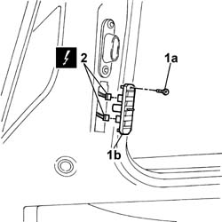

5505A22 sliding side door contact mount, l.h. or r.h. (one) r r
- Path
- Procedures > 55 ELECTRICAL EQUIPMENT > 5505 ELECTRICAL CIRCUIT FOR INSTRUMENTS/INDICATORS > 5505A multi-function components > 5505A22 sliding side door contact mount, l.h. or r.h. (one) r r
- Kind
- repair procedure (removal / refitting; the operation number is the code)
- Applies to
- all engines; all production periods
- Interactive page
- https://sloeber94.github.io/elrnDB-fDbl/en/#/2584875
Applies to: all engines; all production periods
 Removing
Removing
 Refitting
RefittingDisconnect the battery negative terminal.
1. Undo the bolt (1a) and remove the sliding contacts support (1b) from its housing in the bodyshell.
2. Disconnect the electrical connectors and remove the support.
Name | Connector | |
|---|---|---|
2 | Rear left door connection |
Name | Connector | |
|---|---|---|
2 | Rear right door connection |

Applies to: all engines; all production periods
Refitting
RemovingConnect the electrical connection.
 | Name | Connector |
|---|---|---|
- | Rear left door connection |
| Name | Connector |
|---|---|---|
- | Rear right door connection |
Place the sliding contact support in position and secure it using the bolt.